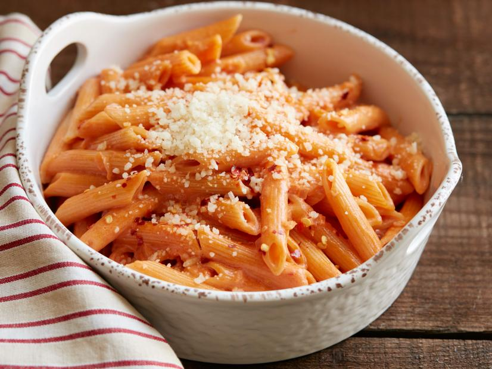

Time: 45 minutes to 1 hour
Servings
0Creamy Tomato Vodka Sauce
Ingredients
- 3 tablespoons of Olive oil
- 1 can of unpeeled whole tomatoes
- 1 whole basil with stem
- 1 cup of heavy cream
- 4 cloves of garlic
- Red pepper flakes to taste
- 1lb of penne pasta
- 3 tablespoons of vodka
- salt to taste
- Optional: grated parmesan or pecorino romano cheese to tase
Instructions
- Add the olive oil to a pot and turn it on medium
- Peel the garlic cloves and slice thinly
- Add the tomatoes to blender and pulse until mostly smooth
- Add the galic and basil into the pan
- Before the garlic browns, turn off the heat and deglaze with the vodka
- Turn the heat back on and burn off the alcohol
- Add the tomatoes and red pepper flakes to the pot
- Reduce the tomato sauce until the it leaves a path when a spoon is dragged across the bottom of the pan. About 40 minutes
- Add some of the vodka sauce to the pasta and mix
- Optional: Top with grated parmesan or pecorino romano cheese